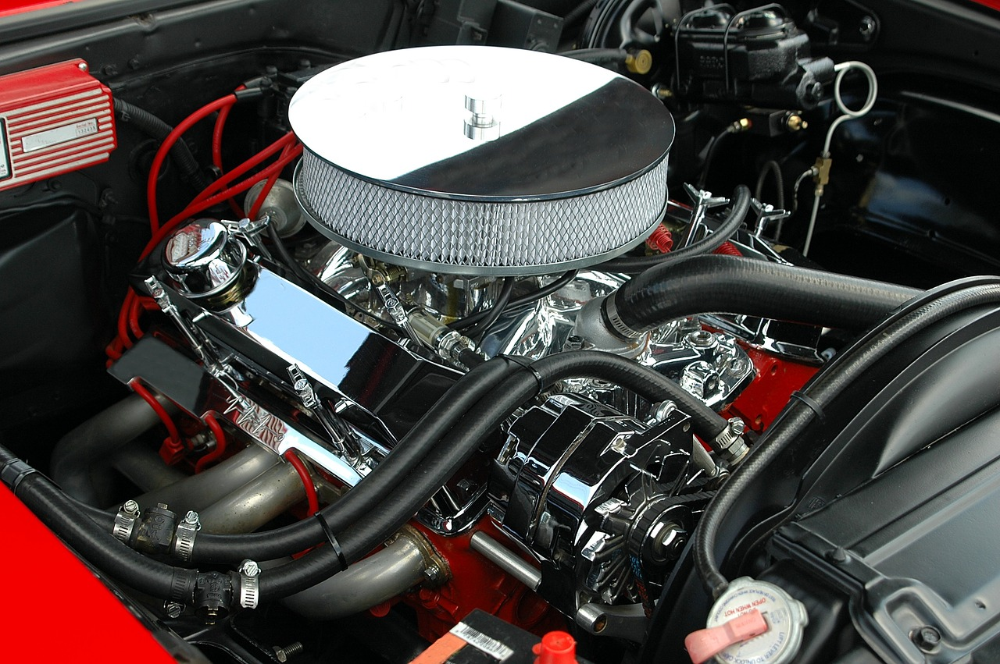
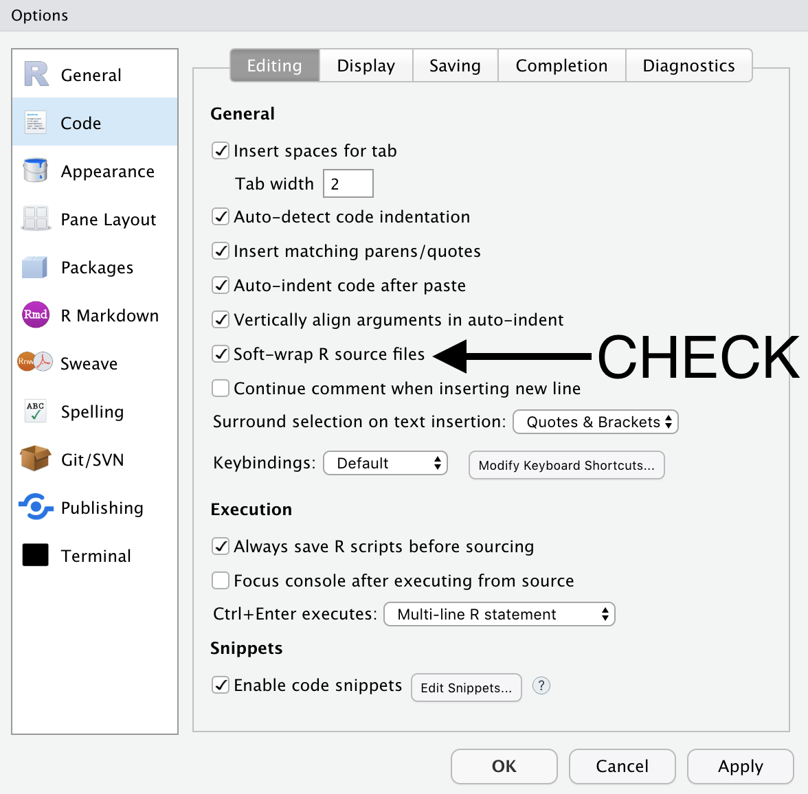

Chapter 1 Introduction to R and RStudio
R is the underlying statistical computing environment. You can think of this like the engine of a car. That makes RStudio like the dashboard1.
 
RStudio is an integrated development environment (IDE) that allows us to interact with R. RStudio sits on top of R and makes writing and executing R code a lot easier. We’ll be benefiting from many of the added features that come with RStudio and we will point them out as we go.
1.1 Panes in RStudio
When you open RStudio, you will have access to R (there is no need to open R directly).
Now go to the top menu to open a new R Script File –> New File –> R Script
Great! Now you will see four panes
- I have mine set up as follows:
- Editor / script / source in the top left
- Console bottom left
- Environment/history on the top right
- Plots/help on the bottom right
Four pane layout in RStudio
On the top left is the script or editor window. This is where we are going to write all of our code.
On the lower left we have the console window. This is where R is running, and this is what you would see if you opened R instead of RStudio. In this pane we can see the code we send and then the answer.
The top right has the environment and history tabs. The Environment is a list of all objects that are saved in memory. The History tab shows all commands that have been run.
- On the bottom right hand side there’s a window with several tabs.
- Files shows the file structure of the working directory.
- Plots is where your visualizations will appear.
- Packages shows all of the installed packages where checked ones are loaded and unchecked packages are not loaded.
- Help shows information about functions.
- Viewer for viewing other kinds of output, like web content.
1.1.1 RStudio Global Options
- There is one set-up preference that I think everyone will prefer. Go to Tools –> Global Options
{width = 400px} This wraps long lines of code on to the next line automatically so that you do not have to scroll left and right to see a long line of code.
Credit to Modern Dive for the R and RStudio analogies↩